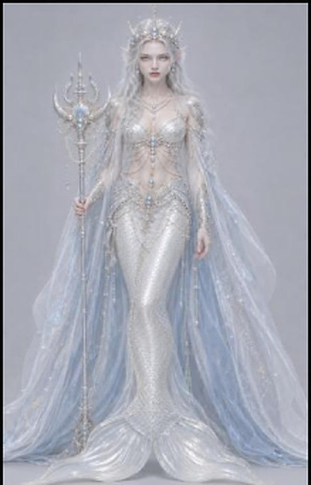
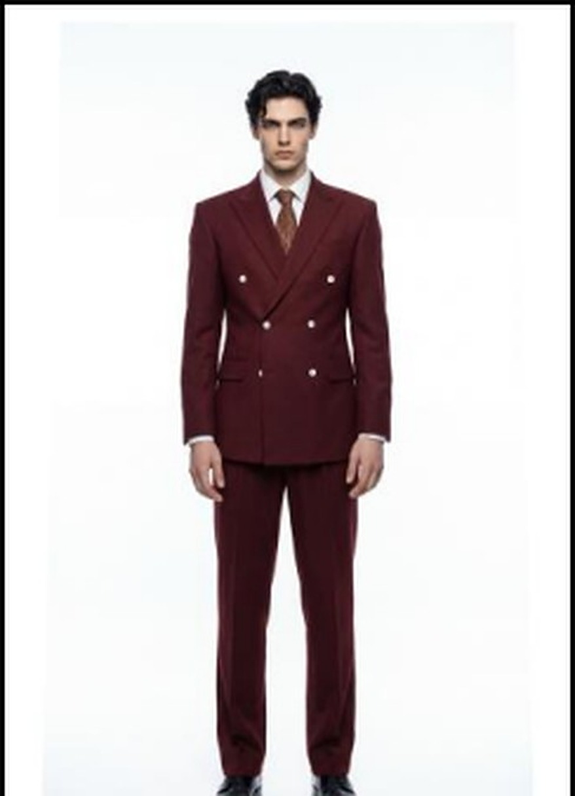

古风剧情 / 全流程
古风情绪流 · 4K 剧情短片
1 分 52 秒的完整叙事：人物设定、场景与镜头语言先定死，逐镜筛选后统一调色与声音。 这条片子把「情绪流」拆成了可复用的步骤——每一镜都留下提示词、种子和废片。
点击封面即可在页内播放成片。片源为本人参与制作的原片，已压缩为 720p 预览，无需跳转。
古风剧情 / 全流程
1 分 52 秒的完整叙事：人物设定、场景与镜头语言先定死，逐镜筛选后统一调色与声音。 这条片子把「情绪流」拆成了可复用的步骤——每一镜都留下提示词、种子和废片。
剪辑 / 调色 / 声音
从珊瑚礁到雪原，55 秒换十几种景别：选段、卡点、调色、声音一起做。
实拍 / 剪辑 / 声音
实拍素材的情绪线重排：选段、留白、呼吸感，声音先定，画面再跟。
电商 / 产品
白底棚拍加细节特写，24 秒讲完材质、尺寸和配色。
以上 12 条成片均为本人参与制作，完整版与更多案例在网盘： 完整作品集（提取码 p3ge）↗
一个人跑一条内容产线，靠的不是手速，是把重复动作变成资产。下面五步就是我每天在走的流程。
从完播率、点击率、转化数据反推什么样的开场能留住人，再决定剧本结构与钩子位置。选本、拆本、审片是同一条标准。
按海外市场审美分组建库——人鱼、兽人、欧美、西班牙四类妆造各配头像与全身服装，锁定同一角色跨镜头的五官与体型，减少重抽。
把分镜字段（场景类型、光线时间、摄影机运动、画面细节、关键帧）固化成 md 文件，用 trae 内置 Claude 批量产出分镜提示词，人只做判断与修正。
多模态模型出画面，逐镜筛选、局部重抽、统一光影与色调；把失败样本连同提示词一起留档，下一集直接绕开。
字幕 noto sans semibold、纯白居中、黑色描边 15、不出现三行；音量 对话 > 音效 > 音乐。成片上线后把数据回灌到下一轮选题与提示词。
为海外用户审美搭的人脸资产与配套服装设计，同角色换装复用。


横向是内容的理解，纵向是工具的熟练；真正值钱的是中间那条把两者接起来的流程。
语言、文字、图像、视频四类模型的提示词撰写与修正；把「感觉」翻译成模型能执行的参数。
场景类型、光线时间、机位运动、关键帧的结构化分镜；一集 100 个镜头也能保持角色与空间连续。
即梦 Seedance 等生成模型的出片、重抽、局部修正与 4K 放大，逐镜控画质与稳定性。
剪映 / PR 工程化剪辑，统一字幕与音量规范；调色与配音让 AI 画面落地成「能投放」的片子。
人脸/服装/场景库、提示词模板、分镜 Skill、踩坑指南——把个人经验变成团队可复用的文件。
冷启动、日更排期、完播/点击/自然流分析；用数据决定下一集怎么改，而不是凭手感。
两段 AIGC 一线经历，一段是把海外短剧做到量产，一段是把电商内容做成日更。
嘉兴九州文化传媒有限公司
浙江垭七文化创意有限公司
中国矿业大学（211）
贵州大学（211）
工程训练留下的东西：可复现、可记录、可交付。这套习惯直接搬进了 AIGC 产线。
Meng QB, Zhang X, Zhu SL, Pu H, Liu JF, Chen YL, Wu JY.
深部巷道围岩时效变形与锚注支护协同机制的理论分析。
DOI: 10.19761/j.1000-4637.2024.04.056.04
异径煤岩体试样直接拉伸试验对中装置（202411371489.3）、干湿循环下岩土试样水理性质测试装置（202411370157.3）、可监测地应力的分类分段注浆装置（202411394669.3）；多矿体同步开采扰动下巷道灾变及地应力反演分析系统。
在找能把 AIGC 从「会玩」做成「能产」的人？
内容运营、AI 视频制作、电商与短剧产线，我都可以带着流程和资产库进组。
邮箱、电话、微信默认不写进页面，点一次才生成，避免被爬虫批量收集。